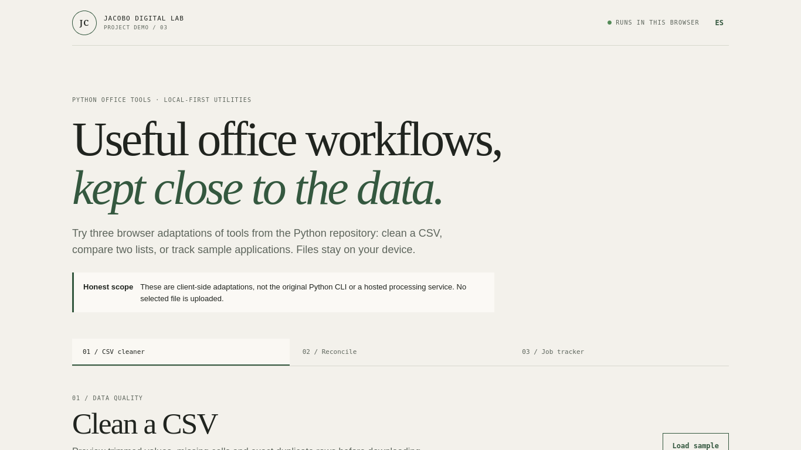

PROJECT CASE STUDY
Python Office Tools
Private, browser-side office utilities
Try CSV cleaning, reconciliation and job tracking with sample data or local files. Files are read in your browser and are not uploaded.

Open live demo ↗01 / PROBLEM
Problem: repetitive data and file workflows.
02 / OBJECTIVE
Objective: make the useful Python utilities explorable on the web.
03 / SOLUTION
Solution: browser-side adaptations of CSV cleaning, reconciliation and job tracking.
04 / ARCHITECTURE
Architecture: static HTML/CSS/JavaScript; File API input remains client-side, sample tracker state is browser-local.
05 / IMPLEMENTATION
Implementation: preview/clean/export CSV, compare records by a key and maintain fictional application records.
06 / TESTING
Testing: valid, invalid, duplicate, missing-key and empty-state paths.
07 / LIMITATIONS & ROADMAP
Limitations & roadmap: file organization/renaming is preview-only; this page does not execute Python and uploads no files.
08 / ACCESS
Access: demo, source repository and technical notes.